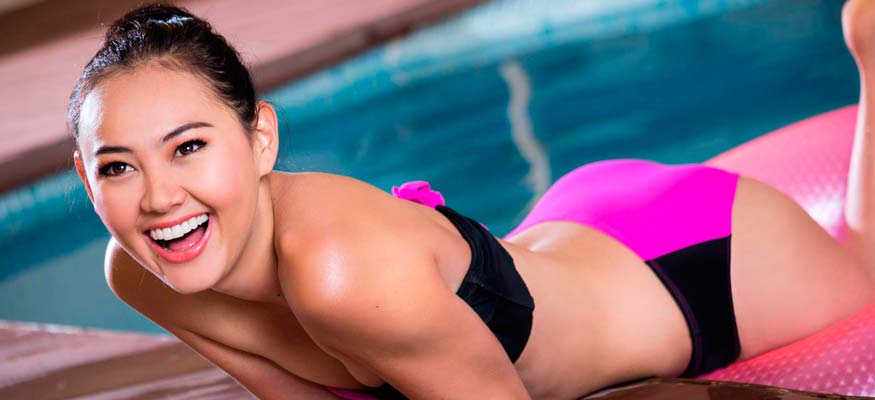

Yuriko Londoño
Agradecemos a Hotel de la Opera por la locación
visítalos en Calle 10 No. 5-72
Instagram: hoteldelaopera
La bumanguesa con genes japoneses y alma caleña
Todo tiene lógica. Su madre quedó embarazada de un japonés en Asia pero regresó a Colombia para dar a luz. Nació en Bucaramanga pero creció en Cali. Hoy, 23 años después, Yuriko Londoño aún sueña con conocer a su padre.
Yuriko Yoshimura Londoño, sería su nombre completo si tuviera el apellido de su padre, apellido que no solo le daría la doble nacionalidad sino que le abriría las puertas del modelaje en todo Asia, anhelo con el que sueña esta hermosa mujer con medidas perfectas de pasarela (75- 60-90) y con una estatura de 1.73.
Pero no solo las medidas y el estar delgada aunque coma de todo, le han servido para llegar a donde ha llegado; una de sus cualidades para haber sido la Next Top Model en 2014 y ser hoy una de las modelos más cotizadas a nivel nacional ha sido su actitud, aunque suene a cliché, su sonrisa y esa humildad indescriptible con la que logra encajar en cualquier lugar.

Es por esta razón que la Revista Boga no dudó un solo instante para que esta sesión se hiciera en el Hotel de la Ópera, ubicado en el corazón de La Candelaria, un lugar que cuenta con una de las piscinas más tranquilas de la ciudad en donde Yuriko logró mostrar, una vez más, su encanto acompañada de sus propios vestidos de baño, marca, que por ahora está manejando desde la cuenta de instagram mientras se posiciona el nombre y hace la apertura oficial de la tienda; un lugar en donde seguramente cualquier mujer sin importar su profesión, su edad y mucho menos sus tallas, puedan ser parte del estilo creativo que Yuriko plasma en los innovadores diseños, llenos de comodidad y sofisticación. Así como es ella.
Esta mujer, ha sido apoyada e impulsada por su madre y su tío a quien llama padre, pues siempre ha ocupado ese lugar.
La belleza exótica de Yuriko no ha pasado desapercibida, para muchos, incluso sus rasgos, hacen parte de un fetiche, no solo en la sexualidad, sino en la femineidad digna de la cultura japonesa, que aunque sonría a carcajadas, parece una muñeca de porcelana irrompible, que siempre permanecerá en su lugar y esperará a que la vida le dé la oportunidad de ver cara a cara a su padre para que el corazón logre sentir la tranquilidad que el agua le da a su cuerpo.

{kind=link}
{kind=link}
{kind=link}
{kind=link}